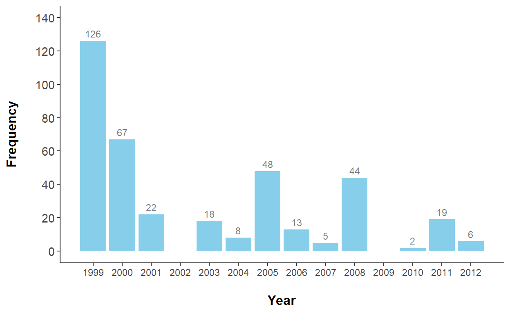
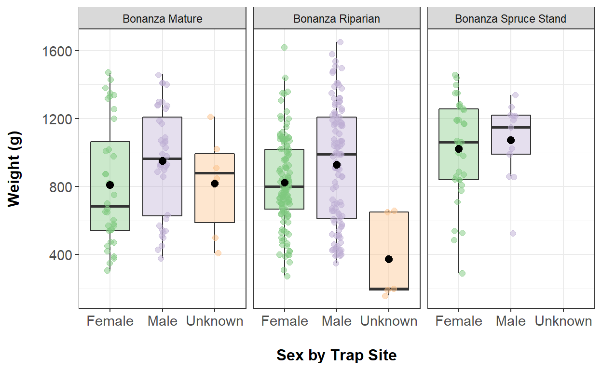
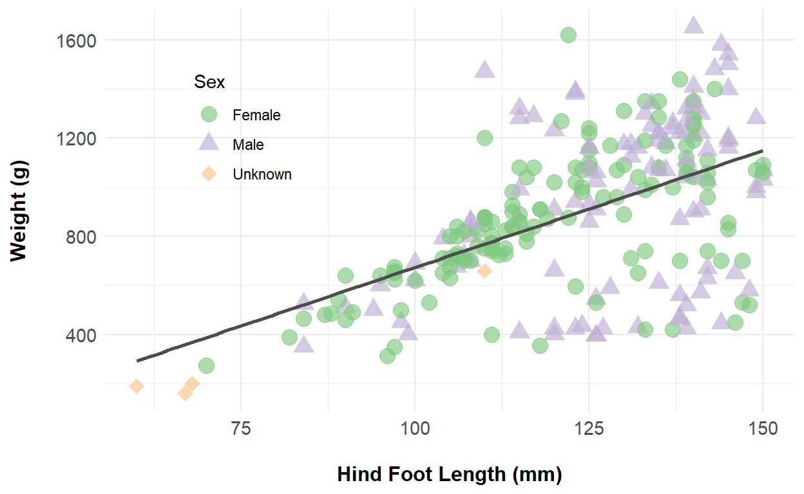

In this project, I created an exploratory report for the relationship between body weight and hind foot length in juvenile female and male snowshoe hares using linear regression analysis.
This report provides an exploratory overview of differences in body weight between juvenile female and male snowshoe hares (Lepus americanus) that were observed in capture-recapture studies at the Bonanza Creek Experimental Forest in interior Alaska from 1999 - 2012 during four primary months per year (June, August, November, and March) that corresponded with life stages of hares to study population densities (Flora, 2002; Kielland et al., 2010; Kielland et al., 2017). Counts of annual juvenile snowshoe hare traps were visualized to explore number of hares observed throughout the course of the study. Body weights of juvenile snowshoe hares were visually compared by sex across three different live trap sites (Bonanza Mature, Bonanza Riparian, and Bonanza Spruce Stand), and weights between females and males overall were statistically compared. Finally, the relationship between body weight and hind foot length for juvenile hares was also explored.
Snowshoe hare physical data was collected from 1998 - 2012 and made available by Dr. Knut Kielland and colleagues as part of the Bonanza Creek Long Term Ecological Research (BNZ LTER) project in interior Alaska (Kielland et al., 2017). Live trap sites included the Bonanza Mature, Bonanza Riparian, and Bonanza Spruce Stand locations which varied by vegetation. The dataset contains 378 unique observations of juvenile snowshoe hares collected during mainly the months of June, August, November, and March for each year from 1999 - 2012 (Kielland et al., 2010). Study phase originally took place from 1998 - 2002, but recorded data collection for juvenile hares began in 1999 and data collection efforts continued after the initial publication of the dataset. Thus, this exploratory data analysis report will include all the available data so far for juvenile hares.
Following exploratory data visualizations, weight comparison between juvenile female and male hares was conducted using a two-sample, unpaired t-test with a significance level (\(\alpha\)) or threshold of 0.05. The difference in means between the two groups was described using Cohen’s d effect size. The relationship between juvenile hare weight and hind foot length was explored by simple linear regression. Diagnostic plots were assessed to determine the fit of the linear model. All analyses were conducted in R version 4.1.1 and RStudio version 1.4.1717.
########## Read in the data
hares <- read_csv(here("_projects", "data", "bonanza_hares.csv"))
#Check data
#head(hares)
########## Clean data
hares <- hares %>%
#Format MM/DD/YY date to YYYY-MM-DD
mutate(date = mdy(date)) %>%
#Rename variables to include units
rename(weight_g = weight,
hindft_mm = hindft,
age_group = age)
#Check data
#head(hares)
########## Filter juvenile hares
hares_j <- hares %>%
#Filter for juvenile hares
filter(age_group == "j")
########## Count juvenile hare traps by year
hares_j_trap_counts <- hares_j %>%
#Create year column
mutate(year = year(date)) %>%
#Group by year
group_by(year) %>%
#Summarize trap counts
summarize(trap_counts = n())
########## Trap count statistics
#Descriptive statistics for juvenile trap counts
hares_j_trap_counts_stats <- hares_j_trap_counts %>%
summarize(min_trap = min(trap_counts),
max_trap = max(trap_counts),
mean_trap = mean(trap_counts),
median_trap = median(trap_counts),
sd_trap = sd(trap_counts))
########## Trap counts plot by year
#Bar plot
ggplot(data = hares_j_trap_counts, aes(x = year,
y = trap_counts)) +
#Define bar plot
#Change fill color
geom_col(fill = "skyblue") +
#Relabel x-axis and y-axis
labs(x = "\nYear",
y = "Frequency\n") +
#Add text for y-values
#Change text color
#Adjust vertical text placement and text size
geom_text(aes(label = trap_counts),
color = "grey50",
vjust = -0.5, size = 3) +
#Scale x-tick marks in intervals of 1 from 1999-2012
scale_x_continuous(breaks = seq(1999, 2012, 1)) +
#Scale y-tick marks in limits of 0-140
#Scale y-tick marks in intervals of 20 from 0-140
scale_y_continuous(limits = c(0, 140),
breaks = seq(0, 140, 20)) +
#Change theme
theme_classic() +
#Add custom theme
#Change y-axis text size
theme(axis.text.y = element_text(size = 11),
#Change axes title size and make bold
axis.title = element_text(size = 12, face = "bold"))

Figure 1. Counts of the total juvenile snowshoe hare trappings from 1999 - 2012. Numbers above each bar plot represent the total count of snowshoe hares trapped for that year. There were no records of hare trap counts for the years 2002 and 2009. Data source: Kielland et al. (2017).
One average, the number of juvenile hare trappings was 31.5 hares across the 14 years (1999 - 2012), with a standard deviation of \(\pm\) 35.9 hares. The median annual trap count was 18.5 hares. The number of hare trappings ranged from 2 - 126, with the lowest count recorded in 2010 and the highest count recorded in 1999. Snowshoe hares are reported to have population fluctuations of 8 - 11 years due to vegetation and predator densities in interior Alaska (Kielland et al., 2017). According to the researchers of the study, the snowshoe hare density observed was highest in 1999 and declined thereafter (Kielland et al., 2017), which is consistent with the exploratory figure shown above (Figure 1).
To standardize juvenile hare population counts moving forward, the researchers could trap hares monthly for each year the study took place rather than just mainly four months each year. Additionally, setting traps on consistent dates per month would help with standardizing the juvenile hare population counts (i.e., traps set on October 30th and November 30th, not October 30th and November 1st). The researchers should also set the same number of traps each year, with the same number of traps evenly divided between each trap site. Additionally, considering other variables like different trap sites and sex could explain different juvenile hare populations seen over the years.
########## Subset data for juvenile hare weights
#Hare weights
hares_j_weights <- hares_j %>%
#Group by sex and site
group_by(sex, grid) %>%
#Rename sites and sex
mutate(grid = case_when(grid == "bonbs" ~ "Bonanza Spruce Stand",
grid == "bonmat" ~ "Bonanza Mature",
grid == "bonrip" ~ "Bonanza Riparian"),
sex = case_when(sex == "f" ~ "Female",
sex == "m" ~ "Male",
is.na(sex) == TRUE ~ "Unknown"))
########## Plot weights by trap site and sex
#Plot weights by site and sex
ggplot(data = hares_j_weights, aes(x = sex,
y = weight_g)) +
#Define boxplot
#Remove fill color and outlier points
#Remove legend for redundancy
geom_boxplot(aes(fill = sex), alpha = 0.4,
outlier.color = NA,
show.legend = FALSE) +
#Add scatter points
#Color by sex, add jitter width, change size and transparency
#Remove legend for redundancy
geom_jitter(aes(color = sex),
position = position_jitter(width = .1),
size = 2.0, alpha = 0.5,
show.legend = FALSE) +
#Add mean value for each sex for each site
#Use point, change size and shape, change color and fill
stat_summary(fun = mean,
geom = "point",
shape = 20,
size = 4,
color ="black",
fill="black") +
#Facet by site
facet_wrap(~ grid) +
#Change x-axis and y-axis labels
#Change legent title
labs(x = "\nSex by Trap Site",
y = "Weight (g)\n",
color = "Sex") +
#Use RColorBrewer color palette to fill boxplot
scale_fill_brewer(palette = "Accent") +
#Use RColorBrewer color palette to fill jitter points
scale_color_brewer(palette = "Accent") +
#Change theme
theme_bw() +
#Add custom theme
#Change axes text size
theme(axis.text = element_text(size = 11),
#Change axes title size and make bold
axis.title = element_text(size = 12, face = "bold"))

Figure 2. Female, male, and unknown sex of juvenile snowshoe hare weights (g) were observed across three different trap sites (Bonanza Mature, Bonanza Riparian, and Bonanza Spruce Stand) from 1999 - 2012. For the Bonanza Spruce Stand site, snowshoe hares were only labeled as either female or male. Green (female), purple (male), and orange (unknown) points indicate individual observations for the weight of a juvenile snowshoe hare. Boxplot endpoints indicate the 25th and 75th percentile, and the black line within the boxplot indicates the median value while the black point within the boxplot indicates the mean value for each sex. Data source: Kielland et al. (2017).
The distribution for weights for each sex across the three trap sites appear to be mostly normal with some mean and median values very similar to each other, and also contain few outliers (Figure 2). There appears to be a mean and median difference in weights between juvenile female and male snowshoe hares. There were only a few juvenile hares whose sex were labeled as unknown, which are unconfirmed males (Kielland et al., 2017) present for Bonanza Mature and Bonanza Riparian sites but not for the Bonanza Spruce Stand site. In addition to potential sex differences in mean weights, there could also be differences in mean weights between the different trap sites. Further investigation, such as running statistical tests, would help determine whether these differences in weights are important and significant.
########## Subset dataframe
#Dataframe of only juvenile female and male hares
hares_j_weights_sex <- hares_j %>%
#Filter for females and males only
filter(sex %in% c("f", "m")) %>%
#Rename sex values
mutate(sex = case_when(sex == "f" ~ "Female",
sex == "m" ~ "Male"))
########## Vectors
#Vectors for weight by sex, dropping rows with NA values for weight
hares_m <- filter(hares_j_weights_sex, sex == "Male") %>%
drop_na(weight_g) %>%
pull(weight_g)
hares_f <- filter(hares_j_weights_sex, sex == "Female") %>%
drop_na(weight_g) %>%
pull(weight_g)
########## Descriptive stats saved as vectors
#Mean and SD of weights by sex
#Sample size for male and female groups
hares_m_mean <- mean(hares_m)
hares_m_sd <- sd(hares_m)
hares_m_sample <- length(hares_m)
hares_f_mean <- mean(hares_f)
hares_f_sd <- sd(hares_f)
hares_f_sample <- length(hares_f)
########## Explore normality: plots
#Histogram by sex
hist_sex <- ggplot(data = hares_j_weights_sex, aes(x = weight_g)) +
#Define histogram
geom_histogram(aes(fill = sex),
bins = 12, color= "white") +
#Facet by sex
facet_wrap(~ sex)
##Female histogram looks relatively normal, while male
##histogram looks bimodal.
#QQ Plot by sex
qq_sex <- ggplot(data = hares_j_weights_sex, aes(sample = weight_g)) +
#Define QQ and add line
geom_qq(aes(color = sex)) + geom_qq_line() +
#Facet by class
facet_wrap(~ sex)
##Female QQ plot show slight S-shaped pattern, and this
##pattern is more pronounced in the male QQ plot.
##This violates assumption of normality of the observations
##for a parametric t-test.
########## Explore normality: Shapiro-Wilks test
hares_m_shapirotest <- shapiro.test(hares_m)
hares_f_shapirotest <- shapiro.test(hares_f)
##Results of Shapiro-Wilks test report a p < 0.05 for
##female weights and p < .001 for male weights, indicating
##that we can reject the null hypothesis that the distribution
##of the data are not significantly different from normal
##distribution. This means our assumption for normality is
##violated since both weight distributions are significantly non-normal.
########## Explore equal variance: Levene's test
hares_levenetest <- car::leveneTest(weight_g ~ sex,
data = hares_j_weights_sex)
##Results of Levene's test report a p < 0.05, indicating that
##we can reject the null hypothesis that the variances are equal.
##This means our assumption for homogeneity of variance is violated
##and we should use a nonparametric test.
########## Decision on test
###Non-parametric test for unpaired two sample data is
##Mann Whitney U test. However, given the INSTRUCTIONS to perform
##a means comparison and to run a t-test, I will be using a t-test
##rather than using the non-parametric test. It is possible that
##our sample size is large enough and based on the central limit
##theorem, we can assume that the population means will be
##normally distributed.
########## T-test
#Two-sided unpaired test, alpha = 0.05
hares_ttest <- t.test(hares_m, hares_f,
alternative = "two.sided",
paired = FALSE,
conf.level = 0.95)
#Save as tidy frame
hares_ttest_tidy <- tidy(hares_ttest)
########## Effect size
hares_t_effsize <- cohen.d(hares_m, hares_f)
########## Create table
hares_j_weights_sex_table <- hares_j_weights_sex %>%
#Group by sex
group_by(sex) %>%
#Summary statistics: mean, standard deviation, sample size
#Only count observations without NA weight values
summarize(mean_weight_g = mean(weight_g, na.rm = TRUE),
sd_weight_g = sd(weight_g, na.rm = TRUE),
sample_size = sum(!is.na(weight_g)))
########## Format in kable
#Rename column names
hares_j_weights_sex_table %>%
kable(col.names = c("Sex",
"Mean (g)",
"Standard Deviation (g)",
"Sample Size"),
#Add caption
caption = c("Descriptive statistics (mean, standard deviation, sample size) for
juvenile snowshoe hare weights (g) as a function of sex. Original
sample sizes for male and female juvenile snowshoe hares in the
dataset are *n* = 163 and *n* = 200, respectively. The sample size
for female juvenile snowshoe hares used for statistical analyses was
reduced to *n* = 197 after removing hares with no recorded weights.
Data source: Kielland et al. (2017)."),
#Specify number of decimal places to keep
digits = 1) %>%
#Add kable styling to center table and make it full width
kable_styling(position = "center", full_width = TRUE)
| Sex | Mean (g) | Standard Deviation (g) | Sample Size |
|---|---|---|---|
| Female | 855.4 | 292.3 | 197 |
| Male | 945.9 | 333.2 | 163 |
On average, juvenile male snowshoe hares have heavier weights (M = 945.9 g, SD = \(\pm\) 333.2 g, n = 163) than juvenile female snowshoe hares (M = 855.4 g, SD = \(\pm\) 292.3 g, n = 197) (Table 1). The absolute difference in means is 90.5 g (about a 10% difference) and this difference is statistically significant (Welch’s two-sample t-test: t(325) = 2.7, p < 0). However, the magnitude of the effect size is small (Cohen’s d = 0.3), indicating that the effect may require further investigation. Thus, while there is a significant difference in weights between juvenile female and male snowshoe hares observed at Bonanza Creek, further metrics of comparisons would be required to determine the practical importance of this difference in mean weights.
########## Exploratory
#Exploratory plots for weight and hind foot length
#Scatter plot, histogram, and correlation
lm_explore <- hares_j %>% select(weight_g, hindft_mm) %>%
ggpairs()
##Figures show that while weight is normally distributed
##among all juvenile hares, the hind foot length is not.
##The hind foot length distribution is negative or left-skewed
##and appears to have two peaks.
########## Construct linear regression model
#Linear regression model
hares_lm <- lm(weight_g ~ hindft_mm,
data = hares_j)
#Tidy format
hares_lm_tidy <- tidy(hares_lm)
hares_lm_glance <- glance(hares_lm)
#Pearson's correlation
hares_cor <- cor.test(hares_j$weight_g, hares_j$hindft_mm)
#Tidy format
hares_cor_tidy <- tidy(hares_cor)
########## Model diagnostics
#Model diagnostic plots in 2x2 grid
# par(mfrow = c(2,2))
# plot(hares_lm)
##First and third plots show that the there is a pattern
##of heteroscedasticity, as the residuals of the model are
##not constant throughout the x-axis value (weight). They do
##not appear evenly or randomly distributed along the horizontal
##dotted line.
##Second plot shows the QQ plot which has a pattern in the
##tail (S-shape pattern), meaning that the residuals are
##not normally distributed
##Fourth plot shows no individual observation that has
##higher influence than others (no known outliers), which is
##okay, but the other plots are concerns that the linear model
##may require, as a starting point, other variables as covariates.
########## Visualization
#Scatter with line plot (used cleaned/renamed values dataframe)
ggplot(data = hares_j_weights, aes(x = hindft_mm,
y = weight_g)) +
#Define point,
#Assign color and shape by sex
#Change size and transparency
geom_point(aes(color = sex, shape = sex),
size = 4.0, alpha = 0.65) +
#Change shape of points
#Change legend name
scale_shape_manual(values = c(19, 17, 18),
name = "Sex") +
#Use RColorBrewer color palette to fill point
#Change legend name
scale_color_brewer(palette = "Accent",
name = "Sex") +
#Add linear line
#Remove standard error confidence interval
#Change color of line
geom_smooth(method = "lm",
se = FALSE, color = "grey30") +
#Change x-axis and y-axis labels
labs(x = "\nHind Foot Length (mm)",
y = "Weight (g)\n") +
#Change theme
theme_minimal() +
#Add custom theme
#Change legend position in plot
theme(legend.position = c(0.20, .70),
#Change axes text size
axis.text = element_text(size = 11),
#Change axes title size and make bold
axis.title = element_text(size = 12, face = "bold"))

Figure 3. Relationship between weight (g) and hind foot length (mm) for each juvenile snowshoe hare sex with recorded data. Points indicate individual hare measurements (female = green circles; male = purple triangles; unknown = orange diamonds). Linear model summary: \(\beta_{1}\) = 9.5 g/mm, p < .001, \(R^2\) = 0.3, Pearson’s r = 0.5). Data source: Kielland et al. (2017).
As a starting point, the relationship between hind foot length and weight was explored across sex (i.e., ignoring sex as a variable). Thus, further analysis is needed to compare the relationship between hind foot length and weight by sex, and should also include trap site as an additional variable.
The relationship between hind foot length and weight appears somewhat linear for juvenile snowshoe hares with recorded data, both across and within sex (Figure 3). Simple linear regression revealed that hind foot length significantly predicts juvenile snowshoe hare weight (F(1, 247) = 105.2, p < .001, \(R^2\) = 0.3), with an average slope of \(\beta\) = 9.5 g/mm (i.e., for each one millimeter increase in hind foot length, we would expect an average increase in weight of 9.5 grams). The multiple \(R^2\) indicates that about 29.9% of the variance in body weight from the linear model is explained by hind foot length. Additionally, hind foot length and weight are moderately and significantly, positively correlated (Pearson’s r = 0.5, p < .001). Diagnostic plots (not included) reveal slightly non-normally distributed and heteroscedastic residuals for the linear model.
This suggests that despite the linear model being significant, there could be other methods or types of models to describe the association between juvenile hare weight and hind foot length rather than using a default linear relationship. The hares labeled as unknown sex have recorded low hind foot and low weight measurements that seem to be outliers that can skew the trend between the relationship of our two variables. When hind foot length is greater than 100 mm, weight appears to increase in grams at a more non-linear rate. Therefore, it might be useful to incorporate other variables in the model, such as sex, and consider non-linear types of models for this relationship between body weight and hind foot length.
Exploratory data analysis reveals the following initial findings:
The highest count of juvenile hare trappings was observed in 1999 and counts for juvenile hare trappings decreased thereafter for subsequent years of the study
Visualizing juvenile hare weights by sex and trap sites reveal possible differences in mean weights
Male juvenile snowshoe hares have higher mean weights than female juvenile snowshoe hares. However, the effect size is small (Cohen’s d = 0.3) despite a significant difference in means
Hind foot length appears to be linearly related with weight for juvenile snowshoe hares, though diagnostic plots suggest using different a different model and/or adding covariates. The simple linear regression relationship is significant, with a slope (expected average increase in grams for weight with a one millimeter increase in hind foot length) of 9.52 g/mm
Future directions or next steps:
Compare weights between juvenile female and male snowshoe hares using a non-parametric test (Mann-Whitney U test) to accomodate for violations of normality and equal variances
Conduct a one-way ANOVA to compare mean weights of juvenile hares between different trap sites
Run a multiple linear regression model to understand the relationship between sex, trap site, hind foot length, and weight for juvenile hares
Flora, B.K. (2002). Comparison of snowshoe hare populations in interior Alaska (Doctoral dissertation). https://scholarworks.alaska.edu/handle/11122/6245.
Kielland, K., Chapin, F.S., Ruess, R.W., & Bonanza Creek LTER. (2017). Snowshoe hare physical data in Bonanza Creek Experimental Forest: 1999-Present ver 22. Environmental Data Initiative. https://doi.org/10.6073/pasta/03dce4856d79b91557d8e6ce2cbcdc14.
Kielland, K., Olson, K., & Euskirchen, E. (2010). Demography of snowshoe hares in relation to regional climate variability during a 10-year population cycle in interior Alaska. Canadian Journal of Forest Research, 40(7), 1265-1272. https://doi.org/10.1139/X10-053.
Fox, J. & Weisberg, S. (2019). An {R} Companion to Applied Regression, Third Edition. Thousand Oaks CA: Sage. URL: https://socialsciences.mcmaster.ca/jfox/Books/Companion/.
Grolemund, G. & Wickham, H. (2011). Dates and Times Made Easy with lubridate. Journal of Statistical Software, 40(3), 1-25. URL https://www.jstatsoft.org/v40/i03/.
Müller, K. (2020). here: A Simpler Way to Find Your Files. R package version 1.0.1. https://CRAN.R-project.org/package=here.
Neuwirth, E. (2014). RColorBrewer: ColorBrewer Palettes. R package version 1.1-2. https://CRAN.R-project.org/package=RColorBrewer.
Robinson, D., Hayes, A., & Couch, S. (2021). broom: Convert Statistical Objects into Tidy Tibbles. R package version 0.7.9. https://CRAN.R-project.org/package=broom.
Schloerke, B., Cook, D., Larmarange, J., Briatte, F., Marbach, M., Thoen, E., Elberg, A., & Crowley, J. (2021). GGally: Extension to ‘ggplot2’. R package version 2.1.2. https://CRAN.R-project.org/package=GGally.
Torchiano, M. (2020). effsize: Efficient Effect Size Computation. doi: 10.5281/zenodo.1480624, R package version 0.8.1, https://doi.org/10.5281/zenodo.1480624.
Wickham et al., (2019). Welcome to the tidyverse. Journal of Open Source Software, 4(43), 1686, https://doi.org/10.21105/joss.01686.
Zhu, H. (2021). kableExtra: Construct Complex Table with ‘kable’ and Pipe Syntax. R package version 1.3.4. https://CRAN.R-project.org/package=kableExtra.
For attribution, please cite this work as
Yu (2021, Nov. 10). Linear Regression: Juvenile Snowshoe Hares at Bonanza Creek. Retrieved from https://esswhy.github.io/projects/regression_snowshoe_hare/
BibTeX citation
@misc{yu2021linear,
author = {Yu, Shuying},
title = {Linear Regression: Juvenile Snowshoe Hares at Bonanza Creek},
url = {https://esswhy.github.io/projects/regression_snowshoe_hare/},
year = {2021}
}